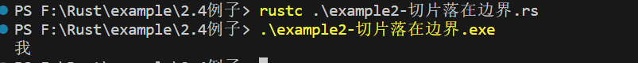

rust 复合类型
字符串
首先先看一个例子代码（example1）：
fn main() {
let my_name = "Q1ngying";
greet(my_name);
}
fn greet(name: String) {
println!("Hello, {}", name);
}greet函数接受了一个字符串类型的name参数，打印到终端，运行下代码：
运行失败，报错如下：
error[E0308]: mismatched types
--> .\example1.rs:3:11
|
3 | greet(my_name);
| ----- ^^^^^^^- help: try using a conversion method: `.to_string()`
| | |
| | expected `String`, found `&str`
| arguments to this function are incorrect
|
note: function defined here
--> .\example1.rs:6:4
|
6 | fn greet(name: String) {
| ^^^^^ ------------
error: aborting due to previous error
For more information about this error, try `rustc --explain E0308`.错误原因：greet函数需要一个String类型的字符串，单数传入的是一个&str类型的字符串。
在了解字符串之前，先了解以下什么是切片：
切片(Slice)
切片并不是 Rust 特有的概念，在 Go 语言中非常流行，它允许你引用集合中部分连续的元素序列，而不是引用整个集合。
对与字符串而言，切片就是对String类型中某一部分的引用，看起来类似这样：
let s = String::from("hello world");
let hello = &s[0..5];
let world = &s[6..11];hello没有引用整个String s，而是引用了s的一部分内容，通过[0..5]的方式指定。
上述便为创建切片的语法，使用方括号包裹一个序列：[开始索引..终止索引]（包左不包右）。
使用 Rust 中的.. range 序列语法，有以下等效：
索引从 0 开始：
let s = String::from("hello"); let slice = &s[0..2]; let slice = &s[..2];从某一位置到最后：
let s = String::from("hello"); let len = s.len(); let slice = &s[4..len]; let slice = &s[4..];完整的切片：
let s = String::from("hello"); let len = s.len(); let slice = &s[0..len]; let slice = &s[..];
对字符串使用切片时，切片的索引必须落到字符之间的边界位置（即 UTF-8 字符的边界）：例如，中文在 UTF-8 中占用三个字节，下面的代码会崩溃（example2，编译正常通过，编译出来的文件无法运行）：
let s = "我是谁";
let a = &s[0..2];
println!("{}", a);PS example\2.4例子> .\example2-切片落在边界.exe
thread 'main' panicked at .\example2-切片落在边界.rs:3:15:
byte index 2 is not a char boundary; it is inside '我' (bytes 0..3) of `我是谁`
note: run with `RUST_BACKTRACE=1` environment variable to display a backtrace将2修改为3后：

字符串的切片类型标识是&str，因此我们可以这样声明一个函数，输入String，返回切片：fn first_word(s: &String) -> &str。
// example3
fn main() {
let mut s = String::from("hello world");
let word = first_word(&s);
s.clear(); // error!
println!("the first word is: {}", word);
}
fn first_word(s: &String) -> &str {
&s[..1]
}编译器报错：
error[E0502]: cannot borrow `s` as mutable because it is also borrowed as immutable
--> .\example3.rs:7:5
|
5 | let word = first_word(&s);
| -- immutable borrow occurs here
6 |
7 | s.clear(); // error!
| ^^^^^^^^^ mutable borrow occurs here
8 |
9 | println!("the first word is: {}", word);
| ---- immutable borrow later used here
error: aborting due to previous error
For more information about this error, try `rustc --explain E0502`.回忆一下借用的规则：当我们已经有了可变借用时，就无法再拥有不可变的借用。因为 clear 需要清空改变 String，因此它需要一个可变借用（利用 VSCode 可以看到该方法的声明是 pub fn clear(&mut self) ，参数是对自身的可变借用 ）；而之后的 println! 又使用了不可变借用，也就是在 s.clear() 处可变借用与不可变借用试图同时生效，因此编译无法通过。
详细解释：
这段代码违反了借用规则：
不可变借用
word:- 当调用
first_word(&s)时，你创建了s的不可变借用。 word是一个指向s的某部分的不可变引用。
- 当调用
尝试可变借用
s.clear():- 然后你尝试调用
s.clear()，这需要一个对s的可变借用，因为clear函数需要改变s。
- 然后你尝试调用
借用规则冲突:
- 在
s.clear()时，Rust 编译器发现s已经被不可变地借用了（由于first_word(&s)）。 - Rust 不允许在不可变借用存在的同时创建可变借用，因为这可能会导致数据竞争和其他安全问题。
- 你试图在
s.clear()时改变s，但s已经被first_word(&s)借用了，这是不被允许的。
- 在
因此，编译器拒绝编译这段代码，以防止潜在的不一致或数据竞争。
要解决这个问题，你需要确保在尝试对 s 进行可变借用（s.clear()）之前，没有任何 s 的活跃的不可变借用。一种可能的解决方案是在对 s 进行可变操作之前结束 word 的作用域，但由于 word 是 s 的一部分的引用，这种情况下可能需要重新思考你的逻辑或数据结构。
其他切片
因为切片是对集合的部分引用，因此不仅仅字符串有切片，其他集合类型也有，比如数组：
let a = [1, 2, 3, 4, 5];
let slice = &a[1..3];
assert_eq!(slice, &[2, 3]);该数组切片类型是&[i32]，数组切片和字符串切片的工作方式是一样的。
字符串字面量是切片
之前提到过字符串字面量，但是没有提到它的类型：
let s = "Hello, world!";实际上，s的类型是&str，因此也可以这样声明
let s:&str = "Hello, world!";该切片指向了程序可执行文件中的某个点，这也是为什么字符串字面量是不可变的，因为&str是一个不可变引用
什么是字符串
顾名思义，字符串是由字符组成的连续集合，但是在上一节提到：Rust中的字符是 Unicode 类型，因此每个字符占据 4 个字节内存空间，但是在字符串中不一样，字符串是 UTF-8 编码，也就是字符串中的字符所占的字节数是变化的（1-4），这样有助于大幅降低字符串所占有的内存空间。
Rust 在语言级别，只有一种字符串类型：str，它通常是以引用类型出现&str，也就是上面提到的字符串切片。虽然语言级别只有上述str，但是在标准库中，还有多种不同用途的字符串类型，其中使用最多的就是String类型
str类型是硬编码可执行文件，也无法修改。但是String是一个可整长，可改变且具有所有权的 UTF-8 编码字符串。当 Rust 用户提到字符串是，往往指的是String类型和&str字符串切片类型，这两个类型都是 UTF-8 编码。
除了 String 类型的字符串，Rust 的标准库还提供了其他类型的字符串，例如 OsString， OsStr， CsString 和CsStr 等，它们分别对应的是具有所有权和被借用的变量。
String 与 &str 的转换
上面已经看到了很多种从&str类型生成String类型的操作
String::from("hello world")"hello,world".to_string()
将String类型转换为&str类型：
// example 4
fn main() {
let s = String::from("hello,world!");
say_hello(&s);
say_hello(&s[..]);
say_hello(s.as_str());
}
fn say_hello(s: &str) {
println!("{}", s);
}实际上这种灵活用法是因为dered隐式强制转换
字符串索引
在其它语言中，使用索引的方式访问字符串的某个字符或者子串是很正常的行为，但是在 Rust 中就会报错：
let s1 = String::from("hello");
let h = s1[0];这段代码会产生如下错误信息：
error[E0277]: the type `String` cannot be indexed by `{integer}`
--> .\example5.rs:3:13
|
3 | let h = s1[0];
| ^^^^^ `String` cannot be indexed by `{integer}`
|
= help: the trait `Index<{integer}>` is not implemented for `String`
= help: the following other types implement trait `Index<Idx>`:
<String as Index<RangeFull>>
<String as Index<std::ops::Range<usize>>>
<String as Index<RangeFrom<usize>>>
<String as Index<RangeTo<usize>>>
<String as Index<RangeInclusive<usize>>>
<String as Index<RangeToInclusive<usize>>>
error: aborting due to previous error
For more information about this error, try `rustc --explain E0277`深入字符串内部
字符串的底层的数据存储格式实际上是[u8]，一个字节数组。对于let hello = String::from("hola");这行代码来说，hola的长度是4字节，因为"hola"中的每个字幕在 UTF-8 编码仅占用 1 个字节，但是对于下面的代码：
let hello = String::from("我是谁");实际上，字符串的长度是9个字节的长度，因为大部分常用汉字在 UTF-8 中的长度是3字节，因此这种情况下对hello进行序列，访问&hello[0]没有任何意义 ，因为取不到我这个字符，而是取到了这个字符三个字节中的第一个字节。
字符串的不同表现形式
现在看一下用梵文写的字符串 “नमस्ते”, 它底层的字节数组如下形式：
[224, 164, 168, 224, 164, 174, 224, 164, 184, 224, 165, 141, 224, 164, 164,
224, 165, 135]长度是 18 个字节，这也是计算机最终存储该字符串的形式。如果从字符的形式去看，则是：
['न', 'म', 'स', '्', 'त', 'े']但是这种形式下，第四和六两个字母根本就不存在，没有任何意义，接着再从字母串的形式去看：
["न", "म", "स्", "ते"]所以，可以看出来 Rust 提供了不同的字符串展现方式，这样程序可以挑选自己想要的方式去使用，而无需去管字符串从人类语言角度看长什么样。
还有一个原因导致了 Rust 不允许去索引字符串：因为索引操作，我们总是期望它的性能表现是 O(1)，然而对于 String 类型来说，无法保证这一点，因为 Rust 可能需要从 0 开始去遍历字符串来定位合法的字符。
字符串切片
字符串切片是非常危险的操作，因为切片的索引是通过字节来进行，但是字符串又是 UTF-8 编码，无法保证索引的字节刚刚号落在字符的边界上：
let hello = "我是谁";
let s = &hello[0..2];运行上面的程序，会直接造成崩溃：
PS example\2.4例子> .\example2-切片落在边界.exe
thread 'main' panicked at .\example2-切片落在边界.rs:3:15:
byte index 2 is not a char boundary; it is inside '我' (bytes 0..3) of `我是谁`
note: run with `RUST_BACKTRACE=1` environment variable to display a backtrace这里提示的很清楚，我们索引的字节落在了 中 字符的内部，这种返回没有任何意义。
因此在通过索引区间来访问字符串时，需要格外的小心，一不注意，就会导致你程序的崩溃！
操作字符串
由于String是可变字符串，下面是 Rust 字符串的修改，添加，删除等常用方法：
追加（Push）
在字符串末尾可以使用push()方法来追加字符char，也可以使用push_str()方法追加字符串字面量。这两种方法都是在原有的字符串上追加，并不会返回新的字符串。有意字符串追加操作要修改原来的字符串，则该字符串必须是可变的，即字符串变量必须由mut关键字修饰。
示例代码：
// example 6
fn main() {
let mut s = String::from("Hello ");
s.push_str("rust");
println!("最佳字符串 push_str() -> {}", s);
s.push('!');
println!("追加字符 push() -> {}", s);
}运行结果：
追加字符串 push_str() -> Hello rust
追加字符 push() -> Hello rust!插入（Insert）
可以使用insert()方法插入单个字符char，也可以使用insert_str()方法插入字符串字面量，与push()方法不同，该方法需要传入两个参数：
- 字符（串）插入位置的索引
- 要插入的字符（串）
索引从 0 开始计数，如果越界则会发生错误，由于字符串插入操作要修改原来的字符串，则该字符串必须是可变的，即字符串变量必须由mut关键字修饰
示例代码：
// example7
fn main() {
let mut s = String::from("Hello rust!");
s.insert(5, ',');
println!("插入字符 insert() -> {}", s);
s.insert_str(6, "I like");
println!("插入字符串 insert_str() -> {}", s);
}代码运行结果：
插入字符 insert() -> Hello, rust!
插入字符串 insert_str() -> Hello, I like rust!替换（Replace）
如果想吧字符串中的某个字符串替换成其他的字符串，可以使用replace()方法，有关的方法有三个
replace方法
该方法可适用于String和&str类型，replace()方法接收两个参数：
- 要被替换的字符串
- 新的字符串
该方法会替换所有匹配到的字符串，该方法是返回一个新的字符串，而不是操作原来的字符串
示例代码：
// example 8
fn main() {
let string_replace = String::from("I like rust. Learning rust is my favorite!");
let new_string_replace = string_replace.replace("rust", "Solidity");
dbg!(new_string_replace);
}运行结果：
[.\example8.rs:5] new_string_replace = "I like Solidity. Learning Solidity is my favorite!"replacen方法
该方法可适用于 String 和 &str 类型。replacen() 方法接收三个参数：
- 要被替换的字符串
- 新的字符串
- 替换的个数。
该方法是返回一个新的字符串，而不是操作原来的字符串。
示例代码如下：
fn main() {
let string_replace = "I like rust. Learning rust is my favorite!";
let new_string_replacen = string_replace.replacen("rust", "RUST", 1);
dbg!(new_string_replacen);
}代码运行结果：
[.\example8.rs:5] new_string_replacen = "I like RUST. Learning rust is my favorite!"replace_range方法
该方法仅适用于String类型。replace_range接收两个参数：
- 要替换的字符串范围（Range）
- 新的字符串
该方法直接操作原来的字符串，不会返回新的字符串。该方法需要使用 mut关键字修饰。
示例代码如下：
fn main() {
let mut string_replace_range = String::from("I like rust!");
string_replace_range.replace_range(7..8, "R");
dbg!(string_replace_range);
}代码运行结果：
string_replace_range = "I like Rust!"删除（Delete）
与字符串删除相关的方法有 4 个，分别是pop()、remove()、truncate()、clear()。这四个方法仅适用于String类型。
pop——删除并返回字符串的最后一个字符
该方法直接操作原来的字符串。但是存在返回值，其返回值是一个Option类型，如果字符串为空，则返回None。示例：
// example 9
fn main() {
let mut string_pop = String::from("rust pop 中文!");
let p1 = string_pop.pop();
let p2 = string_pop.pop();
dbg!(p1);
dbg!(p2);
dbg!(string_pop);
}运行结果：
[.\example9.rs:6] p1 = Some(
'!',
)
[.\example9.rs:7] p2 = Some(
'文',
)
[.\example9.rs:8] string_pop = "rust pop 中"remove——删除并返回字符串指定位置的字符
该方法是直接操作原来的字符串。但是存在返回值，其返回值是删除位置的字符串。接收一个参数：
- 表示该字符起始索引的位置
remove()方法是按照字节来处理字符串的，如果参数所给的位置不是合法的字符边界，则会发生错误
示例代码如下：
// example10
fn main() {
let mut string_remove = String::from("测试remove方法");
println!(
"string_remove 占 {} 个字节",
std::mem::size_of_val(string_remove.as_str())
);
// 删除第一个汉字
string_remove.remove(1);
// 下面代码会发生错误
// string_remove.remove(1);
// 直接删除第二个汉字
// string_remove.remove(3);
dbg!(string_remove);
}
代码运行结果：
string_remove 占 18 个字节
string_remove = "试remove方法"truncate——删除字符串从指定位置开始到结尾的全部字符
该方法是直接操作原来的字符串。无返回值。该方法 truncate() 方法是按照字节来处理字符串的，如果参数所给的位置不是合法的字符边界，则会发生错误。
示例代码如下：
fn main() {
let mut string_truncate = String::from("测试truncate");
string_truncate.truncate(3);
dbg!(string_truncate);
}代码运行结果：
string_truncate = "测"clear——清空字符串
该方法是直接操作原来的字符串。调用后，删除字符串中的所有字符，相当于 truncate() 方法参数为 0 的时候。
示例代码如下：
fn main() {
let mut string_clear = String::from("string clear");
string_clear.clear();
dbg!(string_clear);
}代码运行结果：
string_clear = ""连接（Concatenate）
使用+或者+=连接字符串
使用+或者+=连接字符串，要求右边的参数必须为字符串的切片引用（Slice）类型。当调用+的操作符时，相当于调用了std::String标准库中的add()方法，这里add()方法的第二个参数是一个引用类型，因此我们在使用+时，必须传递切片引用类型，不能直接传递String类型。+是返回一个新的字符串，所以变量声明时，可以不使用mut关键字修饰。
示例代码如下：
fn main() {
let string_append = String::from("hello ");
let string_rust = String::from("rust");
// &string_rust会自动解引用为&str
let result = string_append + &string_rust;
let mut result = result + "!"; // `result + "!"` 中的 `result` 是不可变的
result += "!!!";
println!("连接字符串 + -> {}", result);
}代码运行结果：
连接字符串 + -> hello rust!!!!add()方法的定义：
fn add(self, s: &str) -> String该方法涉及到更复杂的特征功能，简单说明：
fn main() {
let s1 = String::from("hello,");
let s2 = String::from("world!");
// 在下句中，s1的所有权被转移走了，因此后面不能再使用s1
let s3 = s1 + &s2;
assert_eq!(s3,"hello,world!");
// 下面的语句如果去掉注释，就会报错
// println!("{}",s1);
}self 是 String 类型的字符串 s1，该函数说明，只能将 &str 类型的字符串切片添加到 String 类型的 s1 上，然后返回一个新的 String 类型，所以 let s3 = s1 + &s2; 就很好解释了，将 String 类型的 s1 与 &str 类型的 s2 进行相加，最终得到 String 类型的 s3。
由此可推，以下代码也是合法的：
let s1 = String::from("tic");
let s2 = String::from("tac");
let s3 = String::from("toe");
// String = String + &str + &str + &str + &str
let s = s1 + "-" + &s2 + "-" + &s3;String + &str返回一个 String，然后再继续跟一个 &str 进行 + 操作，返回一个 String 类型，不断循环，最终生成一个 s，也是 String 类型。
s1 这个变量通过调用 add() 方法后，所有权被转移到 add() 方法里面， add() 方法调用后就被释放了，同时 s1 也被释放了。再使用 s1 就会发生错误。这里涉及到所有权转移（Move）的相关知识。
使用format!连接字符串
format!这种方法适用于String和&str。format!用法和print!用法类似，详细可参考格式化输出。
示例代码如下：
fn main() {
let s1 = "hello";
let s2 = "world";
let s = format!("{} {}!",s1, s2);
println!("{}",s);
}代码运行结果：
hello rust!字符串转义
我们可以通过转义的方式\输出 ASCII 和 Unicode 字符：
// example 12
fn main() {
// 通过 \ + 字符的十六进制表示，转义出一个字符
let byte_escape = "I'm writing \x52\x75\x73\x74!";
println!("What are you doing\x3F (\\x3F means ?) {}", byte_escape);
// \u 可以输出一个 Unicode 字符
let unicode_codepoint = "\u{211D}";
let character_name = "\"DOUBLE-STRUCK CAPITAL R\"";
println!(
"Unicode character {} (U+211D) is called {}",
unicode_codepoint, character_name
);
// 换行了也会保持之前字符串格式
// 使用 \ 忽略换行符
let long_string = "String literals
can span multiple lines,
The linkbreak and indentation here ->\
<- can be escaped too!";
println!("{}", long_string);
}运行结果：
What are you doing? (\x3F means ?) I'm writing Rust!
Unicode character ℝ (U+211D) is called "DOUBLE-STRUCK CAPITAL R"
String literals
can span multiple lines,
The linkbreak and indentation here -><- can be escaped too!当然，在某些情况下，可能会希望保持字符串的原因，不要转义：
// example 13
fn main() {
println!("{}", "hello \\x52\\x75\\x73\\x74");
let raw_str = r"Escapes don't work here: \x3F \u{211D}";
println!("{}", raw_str);
// 如果字符串包含双引号，可以在开头和结尾加 #
let quotes = r#"And then I said: "There is no escape!""#;
println!("{}", quotes);
//如果还是有歧义，可以继续添加，没有限制
let longer_delimiter = r###"A string with "# in it. And even "##!"###;
println!("{}", longer_delimiter);
}运行结果：
hello \x52\x75\x73\x74
Escapes don't work here: \x3F \u{211D}
And then I said: "There is no escape!"
A string with "# in it. And even "##!操作 UTF-8 字符串
前面提到了几种使用 UTF-8 字符串的方式，下面一一说明：
字符
如果想要以 Unicode 字符的方式遍历字符串，最好的办法是使用chars方法：
for c in "我是谁".chars() {
println!("{}", c);
}输出结果：
我
是
谁字节
这种方式是返回字符串的底层字节数组表现形式：
for b in "我是谁".bytes() {
println!("{}",b);
}输出结果：
230
136
145
230
152
175
232
176
129获取字串
想要准确的从 UTF-8 字符串中获取子串是较为复杂的事情，例如想要从 holla中国人नमस्ते 这种变长的字符串中取出某一个子串，使用标准库你是做不到的。 你需要在 crates.io 上搜索 utf8 来寻找想要的功能。
可以考虑尝试下这个库：utf8_slice。
字符串深度剖析
为什么String可变，而字符串字面值str不可变？
就字符串字面值来说，我们在编译时就知道其内容，最终字面值文本被直接硬编码进可执行文件中，这使得字符串字面值快速且高效，这主要得益于字符串字面值的不可变性。不幸的是，我们不能为了获得这种性能，而把每一个在编译时大小未知的文本都放进内存中（你也做不到！），因为有的字符串是在程序运行得过程中动态生成的。
对于 String 类型，为了支持一个可变、可增长的文本片段，需要在堆上分配一块在编译时未知大小的内存来存放内容，这些都是在程序运行时完成的：
- 首先向操作系统请求内存来存放
String对象 - 在使用完成后，将内存释放，归还给操作系统
其中第一部分由 String::from 完成，它创建了一个全新的 String。
重点来了，到了第二部分，就是百家齐放的环节，在有垃圾回收 GC 的语言中，GC 来负责标记并清除这些不再使用的内存对象，这个过程都是自动完成，无需开发者关心，非常简单好用；但是在无 GC 的语言中，需要开发者手动去释放这些内存对象，就像创建对象需要通过编写代码来完成一样，未能正确释放对象造成的后果简直不可估量。
对于 Rust 而言，安全和性能是写到骨子里的核心特性，如果使用 GC，那么会牺牲性能；如果使用手动管理内存，那么会牺牲安全，这该怎么办？为此，Rust 的开发者想出了一个无比惊艳的办法：变量在离开作用域后，就自动释放其占用的内存：
{
let s = String::from("hello"); // 从此处起，s 是有效的
// 使用 s
} // 此作用域已结束，
// s 不再有效，内存被释放与其它系统编程语言的 free 函数相同，Rust 也提供了一个释放内存的函数： drop，但是不同的是，其它语言要手动调用 free 来释放每一个变量占用的内存，而 Rust 则在变量离开作用域时，自动调用 drop 函数: 上面代码中，Rust 在结尾的 } 处自动调用 drop。